Reddito medio disponibile pro capite (€), 2021-2023 | |||
|---|---|---|---|
territorio | 2021 | 2022 | 2023 |
Italia | 20.032 | 21.297 | 22.359 |
Nord-ovest | 23.438 | 24.910 | 26.265 |
Nord-est | 22.546 | 23.985 | 25.172 |
Emilia-Romagna | N.D. | 24.898 | 26.073 |
Parma | 24.381 | N.D. | 27.083 |
Centro | 20.897 | 22.223 | 23.113 |
Sud | 15.280 | 16.213 | 16.999 |
Isole | 15.517 | 16.527 | 17.439 |
Fonte: Istat, BES (Benessere Equo e Sostenibile), 2025 | |||
ISTAT - Benessere Equo e Sostenibile (BES)
Aggiornamento 2025
Dati Benessere e sostenibilita’
I dati di seguito vengono da IstatData - BES (Benessere Equo e Sostenibile), che, a sua volta, attinge a varie fonti Istat e non-Istat.
Economia e disuguaglianze
[Tbl] Reddito medio disponibile pro capite
Qs tabella è copiata a mano da IstatData
Reddito medio disponibile pro capite (€) = si tratta di un aggregato di contabilità nazionale che rappresenta il reddito medio annuo di cui una persona può disporre, al netto di imposte e contributi, tenendo conto anche di pensioni e trasferimenti pubblici.
NB: anche se viene chiamato “Reddito disponibile lordo pro capite” nei documenti Istat, in realta’ è già al netto delle imposte e dei contributi sociali obbligatori, quindi non è lordo in senso fiscale comune, ma nel senso della contabilita’ nazionale.
In termini comparativi internazionali, il reddito disponibile pro capite è espresso in unità di potere d’acquisto (Purchasing Power Standard - PPS), che consente di eliminare le differenze di prezzo tra i paesi e di confrontare il potere d’acquisto effettivo dei redditi delle famiglie.
(+/- comparabile con) Adjusted gross disposable income of households per capita in PPS - Eurostat
Retrib e pensioni medie
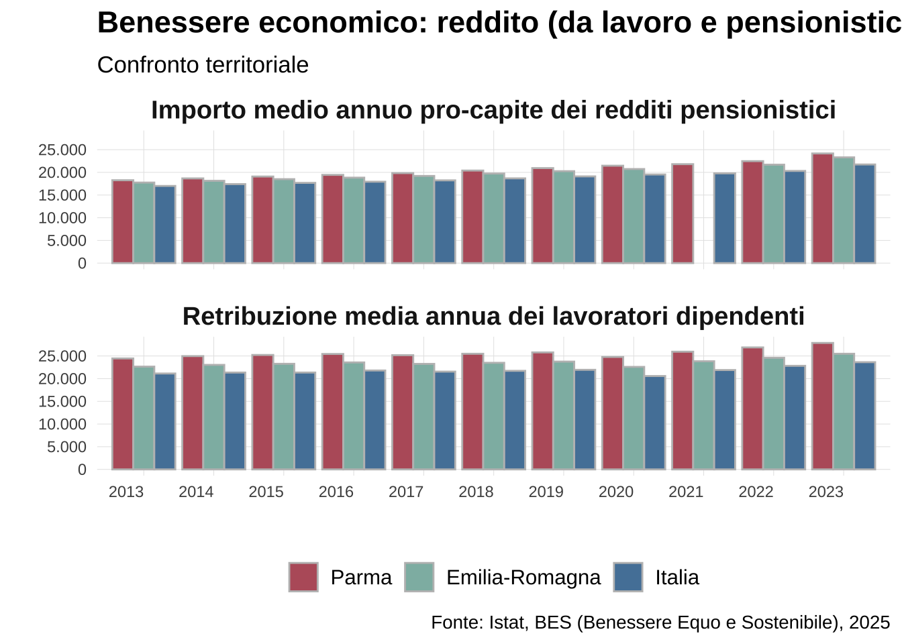
Occupazione
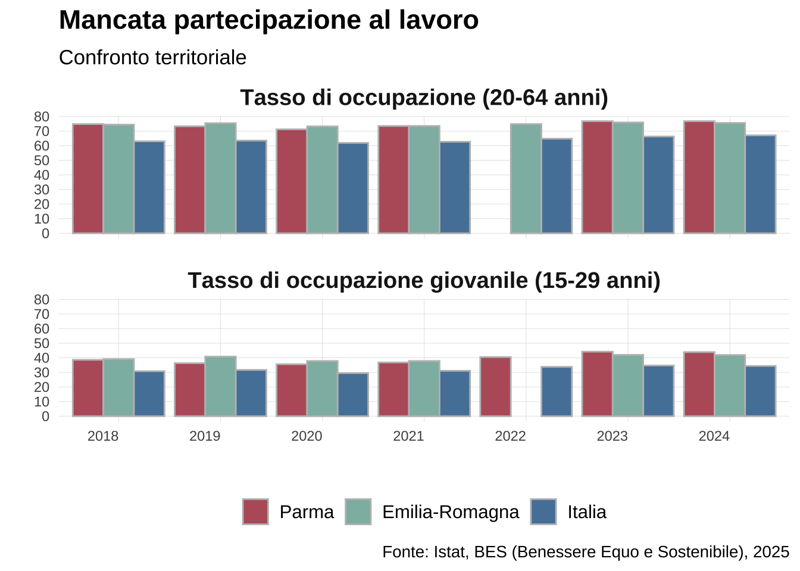
Disoccupazione e mancata partecipazione al lavoro
Il tasso di mancata partecipazione al lavoro misura il Rapporto tra la somma di disoccupati e inattivi “disponibili” (persone che non hanno cercato lavoro nelle ultime 4 settimane ma sono disponibili a lavorare), e la somma di forze lavoro (insieme di occupati e disoccupati) e inattivi “disponibili”, riferito alla popolazione tra 15 e 74 anni.
sono né occupate né in cerca di occupazione (inattivi). Un tasso elevato indica una maggiore difficoltà nel coinvolgimento della popolazione nel mercato del lavoro, il che può essere associato a problemi economici e sociali.
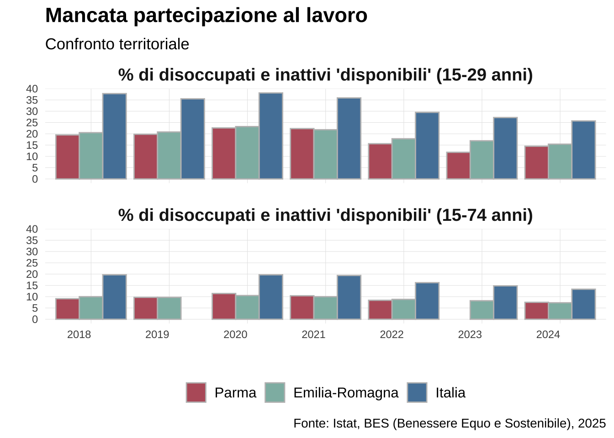
NEET
[Dati un po’ incompleti, sarebbe bello approfondire da fonte primaria: Rilevazione sulle Forze di lavoro]
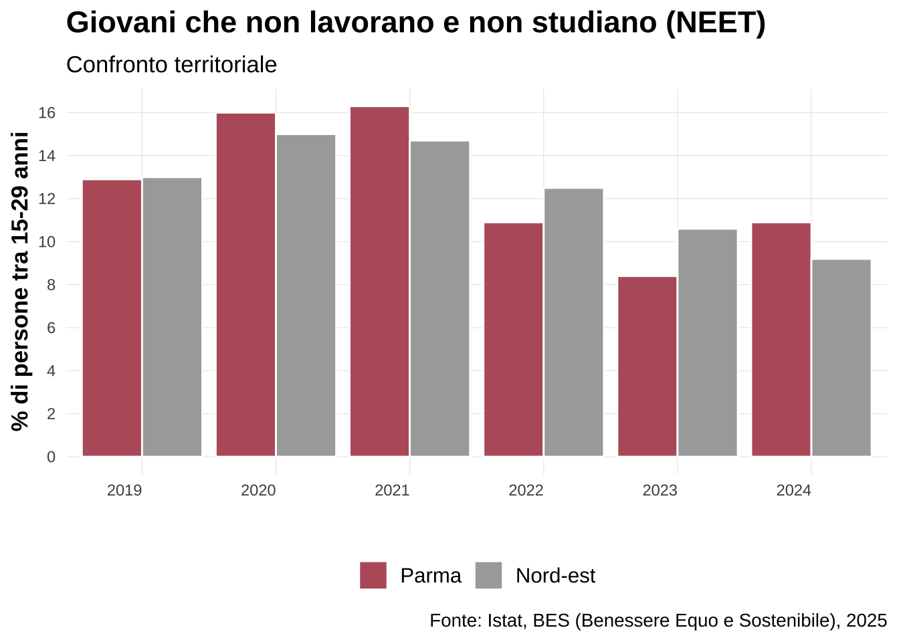
Formazione continua
[Dati un po’ incompleti, sarebbe bello approfondire da fonte primaria: Rilevazione sulle Forze di lavoro]
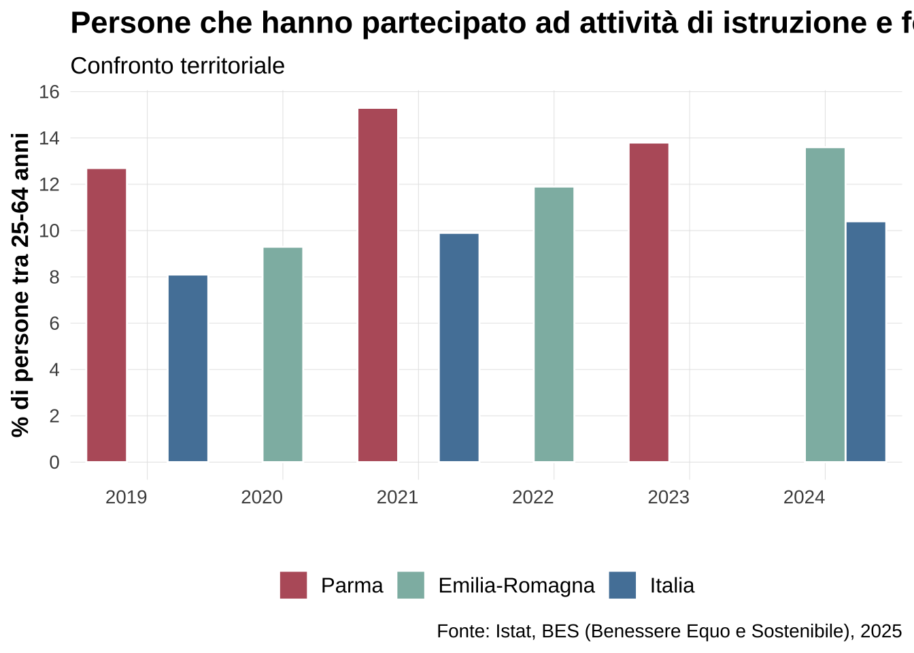
Mobilità dei laureati
Mobilità dei laureati italiani (25-39 anni) = Tasso di migratorietà specifico dei laureati italiani di 25-39 anni (differenza tra iscritti e cancellati per trasferimento di residenza/popolazione residente *1000).Sia il numeratore che il denominatore si riferiscono ai cittadini italiani di 25-39 anni con titolo di studio terziario (laurea, AFAM, dottorato). I valori per l’Italia comprendono solo i movimenti da/per l’estero, poiché il saldo migratorio interno a livello nazionale è pari a zero; la disaggregazione territoriale comprende anche i movimenti interni.
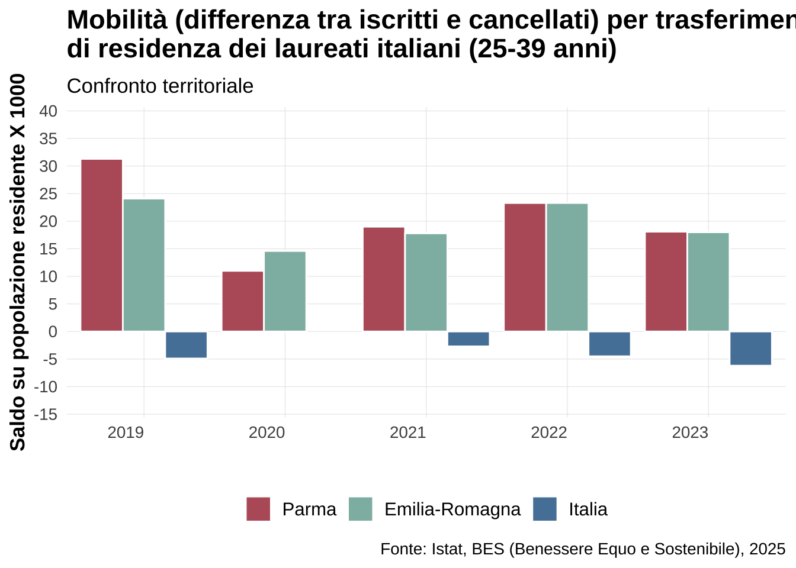
Territorio e ambiente
Servizi sanitari
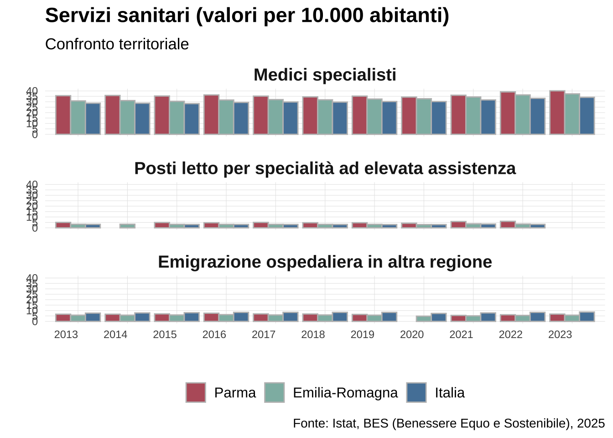
Servizi (internet)
Più librerie, più musei, più strutture, più verde urbano ecc
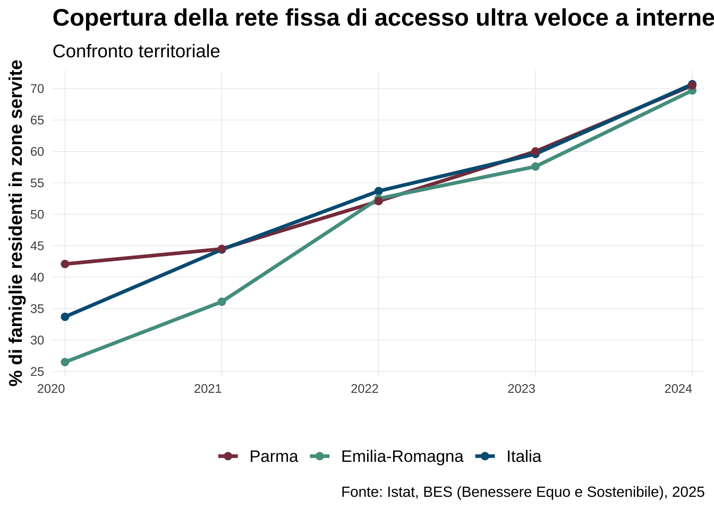
Servizi (raccolta differenziata)
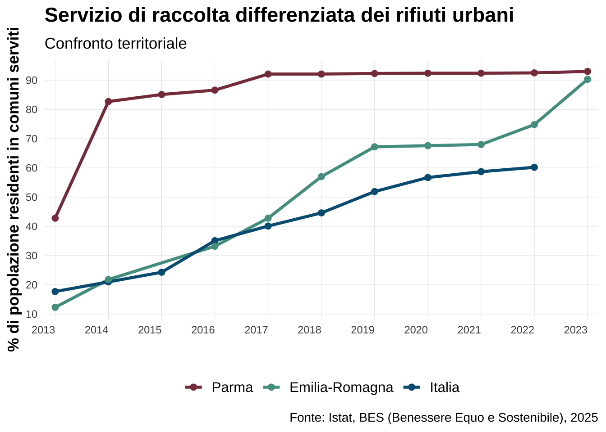
Servizi (irreg elettricita’)
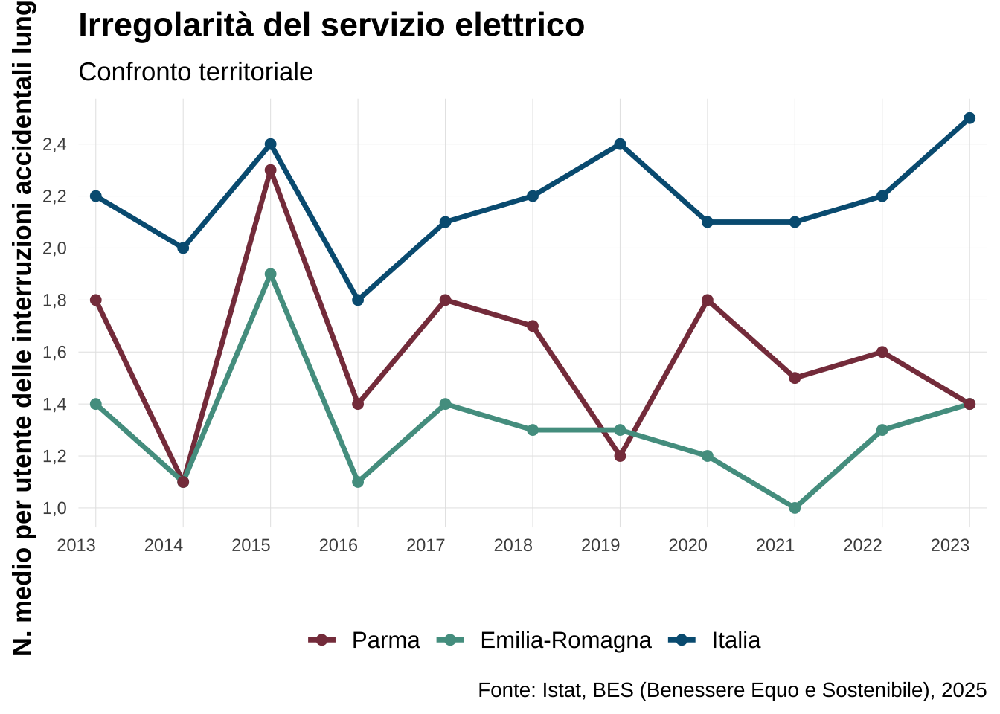
Verde urbano
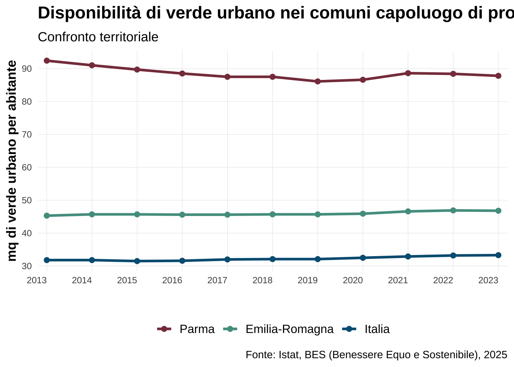
Patrimonio museale e culturale
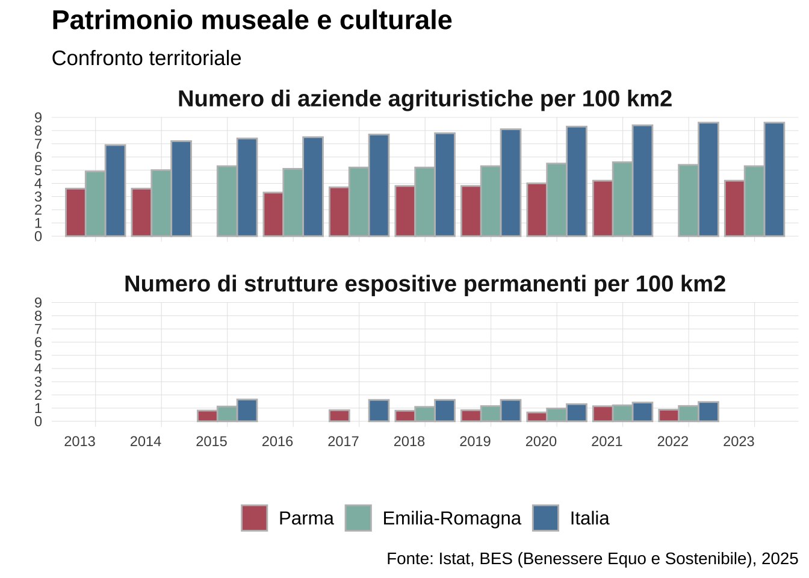
Persone e istituzioni
CAPITALE SOCIALE: Tessuto sociale vitale con un terzo settore numeroso e ben rappresentato
Ricerca e innovazione
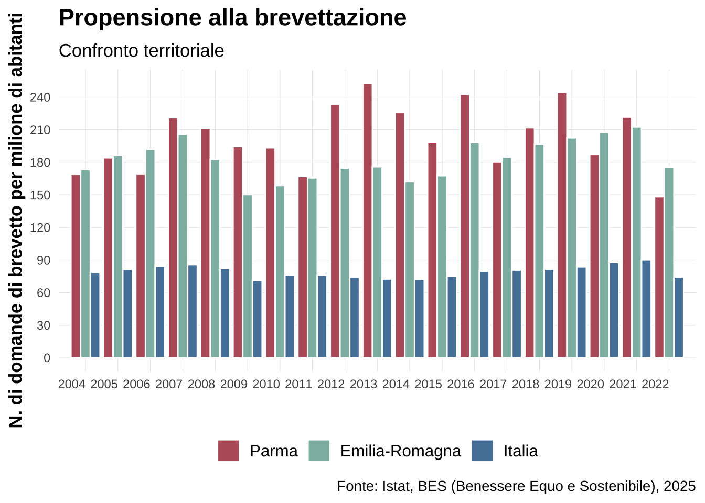
IA e automazione 🟨
TBC